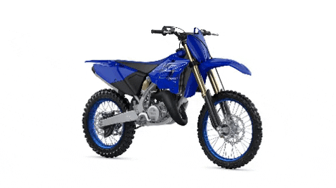

Las motocicletas son una forma emocionante de viajar
Motocicleta deportiva o moto deportiva es una motocicleta de altas prestaciones destinada al uso en la vía pública,1 con características de conducción más agresivas que las de una motocicleta de turismo. Muchas motocicletas deportivas son derivadas de motocicletas de velocidad.2
La primera motocicleta deportiva moderna del mundo fue la Honda CB750. Lanzado en 1969, incorporando un potente motor de cuatro cilindros y 750 cc, también presentó el primer freno de disco del mundo en una motocicleta de producción. Fue un éxito instantáneo entre el público y permaneció en producción hasta 2003.
Las motocicletas deportivas van equipadas en su mayoría de un carenado, que mejora su aerodinámica, con el fin de alcanzar altas velocidades, habitualmente por encima de los 250 km/h o incluso más de 300 km/h3 en los modelos más exóticos.4
La posición de conducción de una motocicleta deportiva es usualmente muy agresiva, en el sentido de que obliga al cuerpo a estar muy adelantado. Con ello se gana estabilidad en la dirección y facilita la aerodinámica.5
Habitualmente son las motocicletas de calle con mejor relación peso potencia. Esto se logra con motores de alta cilindrada y materiales ligeros.6
